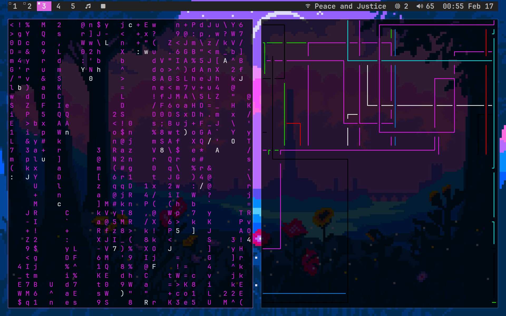

About 2 days ago I started modifying my dwm config from "basically default" to "moderately patched." You can look at my dotfiles here, where you'll find a fairly-modified dwm that looks fairly clean and is still fairly underdeveloped (I'm fairly busy with school and robotics rn.-.). The main changes I made were to eliminating the tab names near the top (see dwm-notabs), adding a gap in the bar and between windows for a slicker look, and the introduction of a simple sl-status config that can be seen in my repo.

I've been using Emacs as my daily driver for programming, note-taking, and essay-writing for about a month at thsi point. While very slow, I've learned to appreciate its feature-dense ecosystem and am scared to switch back to other editors with their lack of e-lisp .-.